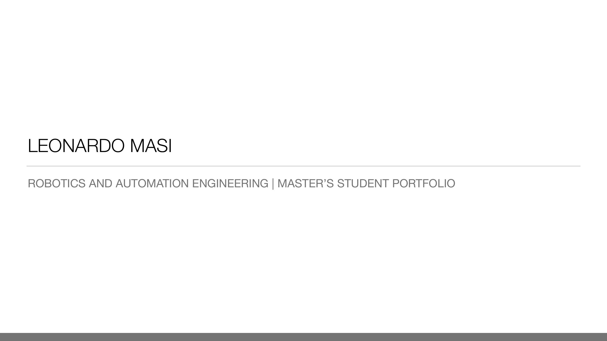
LEONARDO MASI ROBOTICS AND AUTOMATION ENGINEERING | MASTER’S STUDENT PORTFOLIO
About Me Hi! My name is Leonardo Masi. I am a Master’s Student in Robotics, Automation and Electrical Engineering at the University of Florence, with a background in in Biomedical Engineering. Thank you for taking a few minutes to review my portfolio and know more about my work. This document showcases the most signi cant projects I have completed recently. Leonardo Masi leomasi1705@gmail.com 2 fi
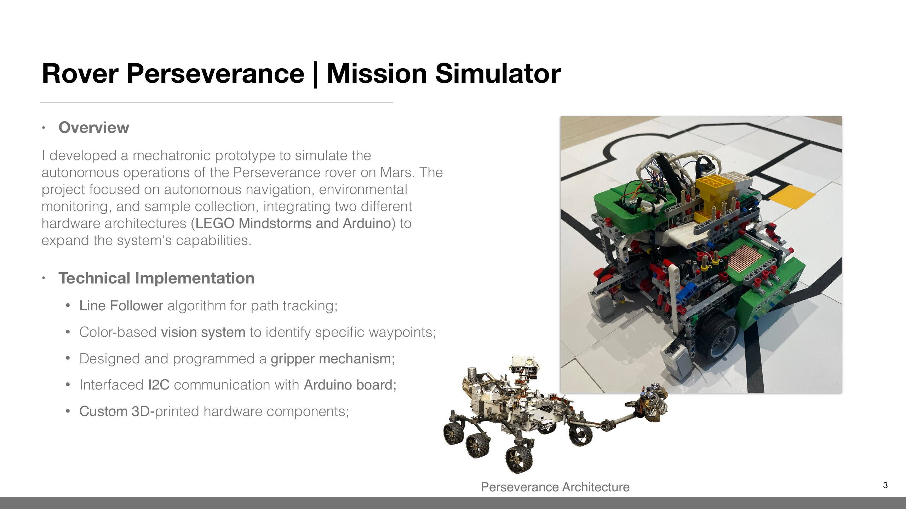
Rover Perseverance | Mission Simulator • Overview I developed a mechatronic prototype to simulate the autonomous operations of the Perseverance rover on Mars. The project focused on autonomous navigation, environmental monitoring, and sample collection, integrating two different hardware architectures (LEGO Mindstorms and Arduino) to expand the system's capabilities. • Technical Implementation • Line Follower algorithm for path tracking; • Color-based vision system to identify speci c waypoints; • Designed and programmed a gripper mechanism; • Interfaced I2C communication with Arduino board; • Custom 3D-printed hardware components; Perseverance Architecture 3 fi
Rover Perseverance | Mission Simulator Line follower path with color waypoints https://youtu.be/JlRWyniSSKs Robot explosion 4
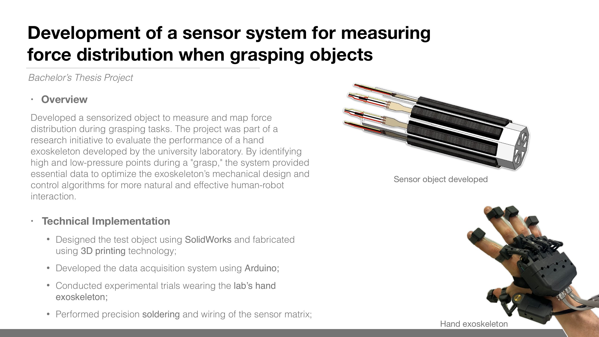
Development of a sensor system for measuring force distribution when grasping objects Bachelor’s Thesis Project • Overview Developed a sensorized object to measure and map force distribution during grasping tasks. The project was part of a research initiative to evaluate the performance of a hand exoskeleton developed by the university laboratory. By identifying high and low-pressure points during a "grasp," the system provided essential data to optimize the exoskeleton’s mechanical design and Sensor object developed control algorithms for more natural and effective human-robot interaction. • Technical Implementation • Designed the test object using SolidWorks and fabricated using 3D printing technology; • Developed the data acquisition system using Arduino; • Conducted experimental trials wearing the lab’s hand exoskeleton; • Performed precision soldering and wiring of the sensor matrix; 5 Hand exoskeleton
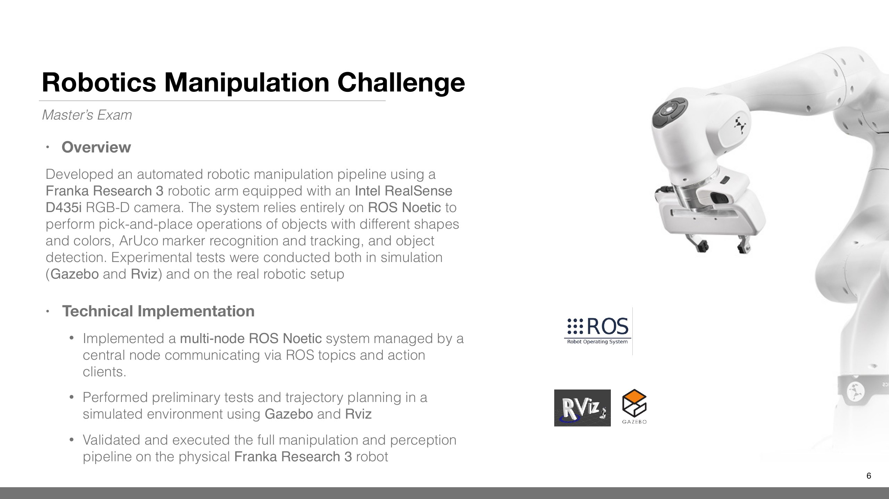
Robotics Manipulation Challenge Master’s Exam • Overview Developed an automated robotic manipulation pipeline using a Franka Research 3 robotic arm equipped with an Intel RealSense D435i RGB-D camera. The system relies entirely on ROS Noetic to perform pick-and-place operations of objects with different shapes and colors, ArUco marker recognition and tracking, and object detection. Experimental tests were conducted both in simulation (Gazebo and Rviz) and on the real robotic setup • Technical Implementation • Implemented a multi-node ROS Noetic system managed by a central node communicating via ROS topics and action clients. • Performed preliminary tests and trajectory planning in a simulated environment using Gazebo and Rviz • Validated and executed the full manipulation and perception pipeline on the physical Franka Research 3 robot 6
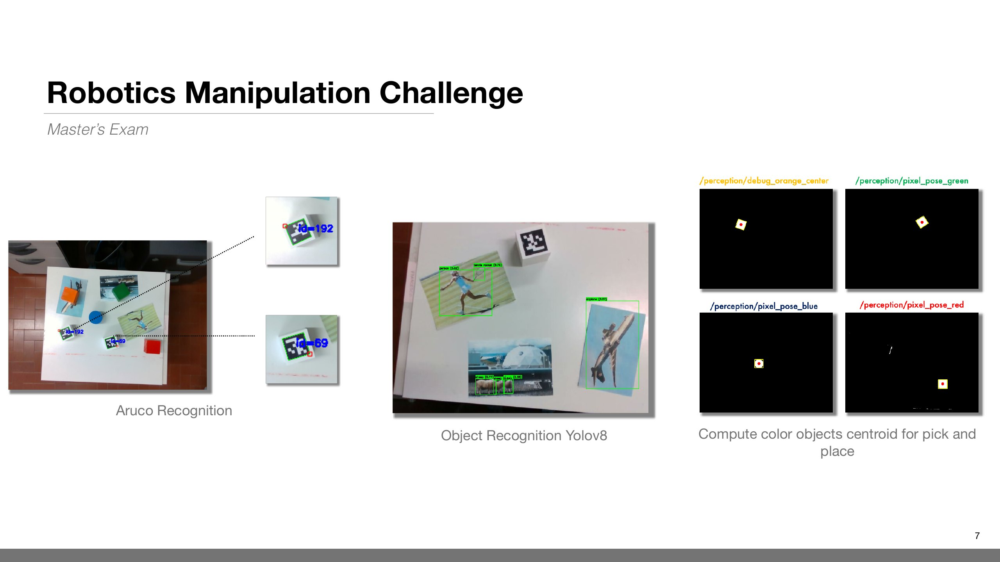
Robotics Manipulation Challenge Master’s Exam Aruco Recognition Object Recognition Yolov8 Compute color objects centroid for pick and place 7
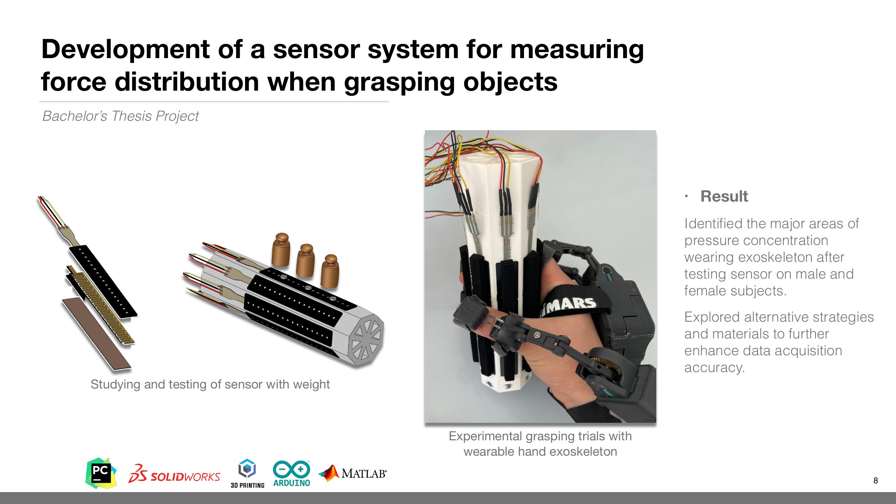
Development of a sensor system for measuring force distribution when grasping objects Bachelor’s Thesis Project • Result Identi ed the major areas of pressure concentration wearing exoskeleton after testing sensor on male and female subjects. Explored alternative strategies and materials to further enhance data acquisition accuracy. Studying and testing of sensor with weight Experimental grasping trials with wearable hand exoskeleton 8 fi
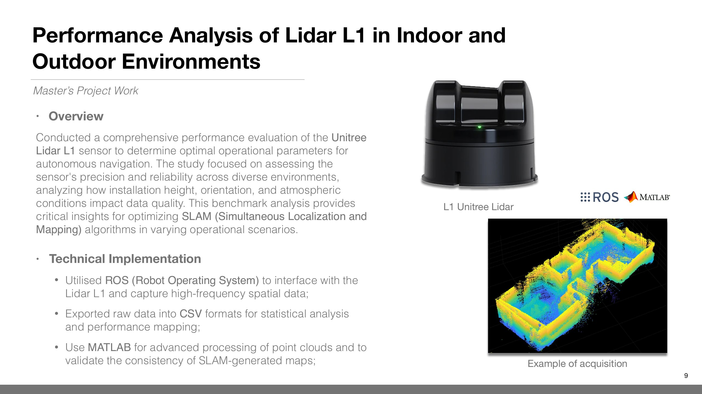
Performance Analysis of Lidar L1 in Indoor and Outdoor Environments Master’s Project Work • Overview Conducted a comprehensive performance evaluation of the Unitree Lidar L1 sensor to determine optimal operational parameters for autonomous navigation. The study focused on assessing the sensor's precision and reliability across diverse environments, analyzing how installation height, orientation, and atmospheric conditions impact data quality. This benchmark analysis provides L1 Unitree Lidar critical insights for optimizing SLAM (Simultaneous Localization and Mapping) algorithms in varying operational scenarios. • Technical Implementation • Utilised ROS (Robot Operating System) to interface with the Lidar L1 and capture high-frequency spatial data; • Exported raw data into CSV formats for statistical analysis and performance mapping; • Use MATLAB for advanced processing of point clouds and to validate the consistency of SLAM-generated maps; Example of acquisition 9
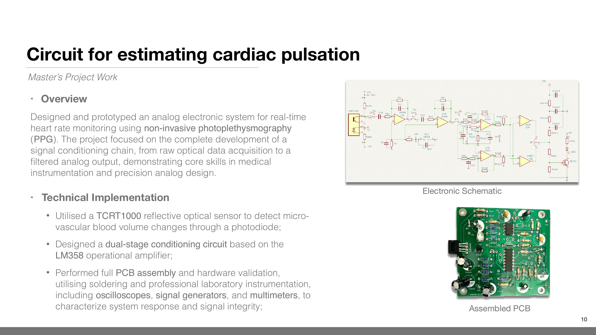
Circuit for estimating cardiac pulsation Master’s Project Work • Overview Designed and prototyped an analog electronic system for real-time heart rate monitoring using non-invasive photoplethysmography (PPG). The project focused on the complete development of a signal conditioning chain, from raw optical data acquisition to a ltered analog output, demonstrating core skills in medical instrumentation and precision analog design. Electronic Schematic • Technical Implementation • Utilised a TCRT1000 re ective optical sensor to detect micro- vascular blood volume changes through a photodiode; • Designed a dual-stage conditioning circuit based on the LM358 operational ampli er; • Performed full PCB assembly and hardware validation, utilising soldering and professional laboratory instrumentation, including oscilloscopes, signal generators, and multimeters, to characterize system response and signal integrity; Assembled PCB 10 fi fl fi
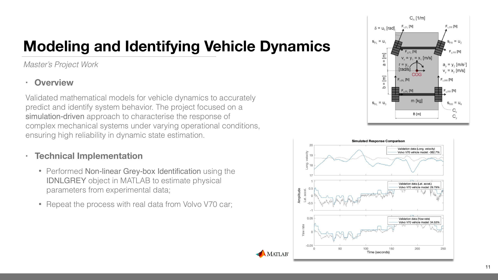
Modeling and Identifying Vehicle Dynamics Master’s Project Work • Overview Validated mathematical models for vehicle dynamics to accurately predict and identify system behavior. The project focused on a simulation-driven approach to characterise the response of complex mechanical systems under varying operational conditions, ensuring high reliability in dynamic state estimation. • Technical Implementation • Performed Non-linear Grey-box Identi cation using the IDNLGREY object in MATLAB to estimate physical parameters from experimental data; • Repeat the process with real data from Volvo V70 car; 11 fi
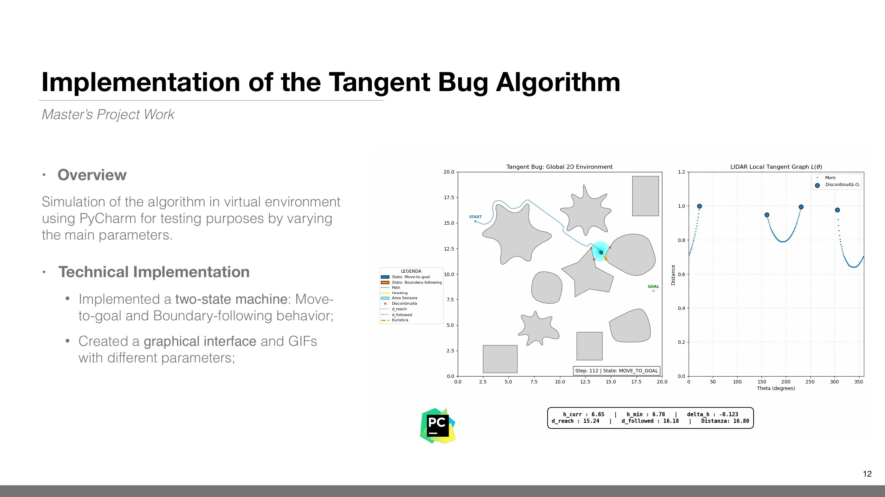
Implementation of the Tangent Bug Algorithm Master’s Project Work • Overview Simulation of the algorithm in virtual environment using PyCharm for testing purposes by varying the main parameters. • Technical Implementation • Implemented a two-state machine: Move- to-goal and Boundary-following behavior; • Created a graphical interface and GIFs with different parameters; 12
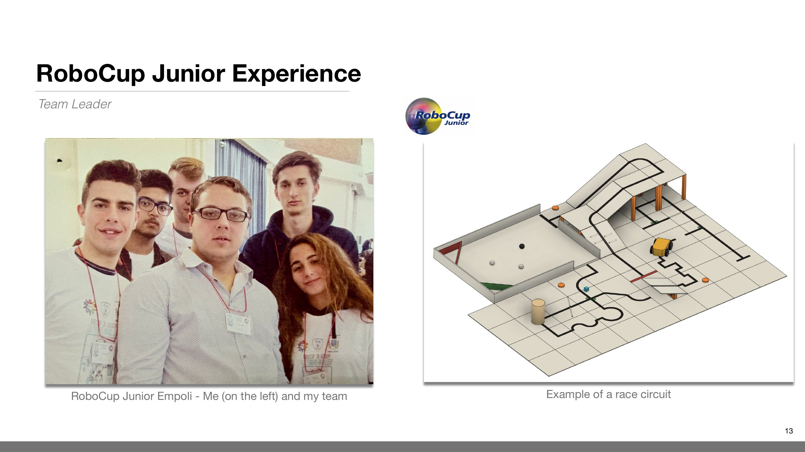
RoboCup Junior Experience Team Leader RoboCup Junior Empoli - Me (on the left) and my team Example of a race circuit 13
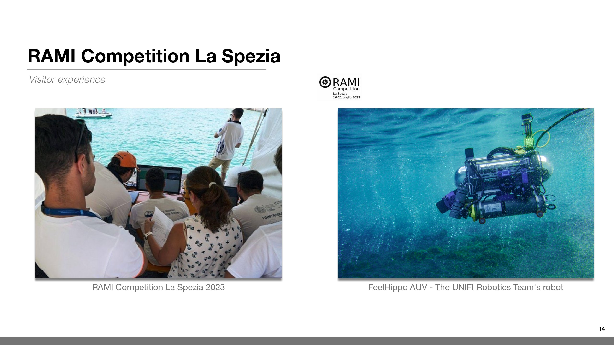
RAMI Competition La Spezia Visitor experience RAMI Competition La Spezia 2023 FeelHippo AUV - The UNIFI Robotics Team's robot 14
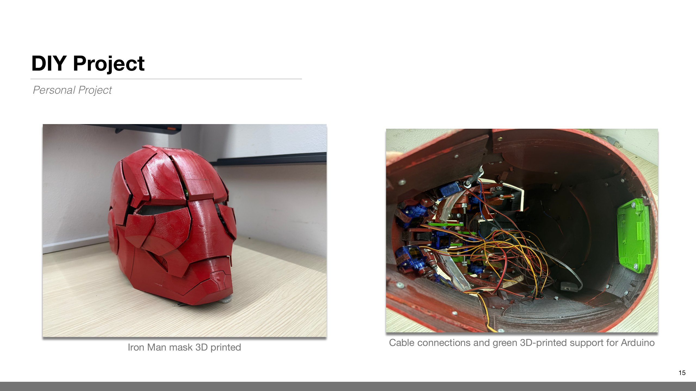
DIY Project Personal Project Iron Man mask 3D printed Cable connections and green 3D-printed support for Arduino 15